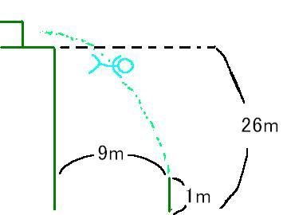

日々、想ふ
〜過去感じたことがつれづれと〜
（できるだけ最大化してお読みください）
過去、想ふ
夏の日の長き陽を。６/１５
課題ラストスパート、タケユキです。
前々から言ってた通り、劇団四季「美女と野獣」見に行く日でした。
１７時に梅田で待ち合わせだったんで、
ちょっと早めに行って紀伊国屋で買い物。
それから合流していざ京都・四季劇場へ。
４月に一度見てたんだけど、やっぱりすごいものは何度見てもすごい。
少し眠たかったけど最後まで見終わってから大阪へ戻る。
もう１０時半くらいで眠たかったけど空腹には勝てずマクドへ。
それからマクドでハンバーガー食べて満足、帰宅。
今日はいろんなツアーのパンフ見たりして、
プリクラ撮ろうと誘うも軽く流されたり（涙）
海外へ行きたい願望が強くなったんだけど
今のとこオーストラリアのエアーズロックが一つの候補にあがってる。
それを一緒に見に行った友達に話したら、
「そんなんただの岩やん、やっぱり海よ海」
今日の反論：世界最大の一枚岩をただの岩とは何事か。
日課。６/１４
今午前４時ですなぜか更新してます、タケユキです。
今日は朝の９時から学校の演習室で課題開始、
１１時までやっていったん昼ご飯を食べに学食へ。
それから授業のある２時半までやって２時半〜４時１０分まで授業。
それから１９時まで課題やって晩ご飯食べに学食へ。
０時気分転換にみんなで花火。
午前３時半、とりあえず区切りがついたので帰宅、今に到ります。
区切りがついたって言っても終わったわけじゃありません、
まだあと半分か３分の１残ってます、いじめか。
まあなんとか明日は劇団四季見にいけそうなのでよかったよかった。
ってか課題がどんなに進んでなかろうとも見に行くつもりだったけど。
今日の花火：だから俺は線香花火の腕前西日本三位だっての。
追い込まれた人間は。６/１３
タニペー誕生日おめでとうようこそ２０代の世界へ、タケユキです。
今日は夕方からバイト行ってました。
というわけで最近毎日日記に出てくるレポート課題、
ほとんど進んでおりません。
でも火曜日には前々から言ってた通り、劇団四季、
レポート提出は水曜日・・・。
明日は学校に泊まることになるかもしれません。
今日の一言：明日更新がなかったらそうだと思ってください。
土曜日。６/１２
こんな時に新歓かよ普通にうらやましいんですけど、タケユキです。
今日も来週提出の課題ちょっとやってバイト行きました。
課題のゴールが見えてきません。
バイトから帰ってきてまた課題やろうと思って
パソコンつけて、つけたついでにテレビ欄見たら、
サッカー欧州選手権「ポルトガル×ギリシャ」やってるじゃないですか
課題は明日こそがんばります、あ、明日もバイトだ。
今日のバイト：ちょっとつまらんかった。
予習。６/１１
歯医者に行って待合室、
なんか込んでるらしく俺が診てもらうのが
少し遅れそうだって
看護婦さんが教えてくれた。
「雑誌か何かお持ちしましょうか？」
って言ってくれたんでお願いしたら
ファミ通を渡された。
もっと他に選択肢があっただろうなぜ俺にこれを、タケユキです。
たしかに昔は読んでたけども。
今日は来週の「美女と野獣」の予習をかねて
ディズニーのアニメの方の「美女と野獣」を友達に借りて見た。
４月に一度四季の「美女と野獣」を見てたんだけどもアニメ見てさらにびっくりした。
ミュージカルのとそっくりじゃん、アニメなのに。
ってか順番的には逆なんか、
アニメのとそっくりじゃん、ミュージカルなのに。
終始感動しながら見てた。
あれ？課題のレポートは？
今日の学校：「斥力」をちゃんと読めないのは人としてどうか。
プリーズヘルプミー。６/１０
とりあえず中間テストみたいな試験の山は超えたものの、
レポート課題がどうにもなりそうな雰囲気がありません、
俺はこれからどうしたらいいですか、
どうしようもないですねとりあえずがんばります、タケユキです。
今日学校終わってやっとのんびりできると思った夕方、
バイトの友達から電話「今日代わってもらえへん？」
急遽バイトになりました。
てなわけでバイトから帰ってきた今のんびりしてます。
さっき言ってたレポート課題なんだけど、提出日は１６日。
これからの俺のスケジュールを確認したら、
１１日バイト、１２日バイト、１３日バイト、１４日バイトか未定（予約次第）、
１５日劇団四季「美女と野獣」。
そりゃ合い間合い間に多少は時間はあるだろうけども
どっちにしろ絶望的なこのスケジュール、
タケユキはC言語に精通した人材を広く募集しております。
けっこう本気で助けて欲しいです、
こんなところで募集する暇あったら課題やれって話ですねそれじゃがんばります。
今日のよかったこと：卵が安かった。
懐古。６/９
今日自動販売機の前で友達が小銭を落としました、
１００円玉と１０円玉。
１０円玉は溝に落ちて紛失、１００円玉はギリギリセーフ。
「あぶね〜、でも１００円助かった。得した気分や」たぶんしっかり１０円損してますよ、タケユキです。
最近俳優がマンションから落ちたって話題になってたけど
そういえば俺の周りにも落ちたことがある人っているもんだと思った。
小学校の朝礼台から落ちたことのある人、
サッカー中にオーバーヘッドやって腰から落ちたやつ、
駅のホームから落ちたやつ。
このホームから落ちたのを俺は目撃しました。
高校の時の話なんでちょっとうろ覚えなんだけど、
たしかその時３人で乗り継ぎの電車をホームで待ってた時のこと。
一人は立ち食いそばを食べ、俺は外で時間をつぶし、
彼は電車に乗る白線の少し内側にある
盲目の人用の黄色いデコボコしたやつがほんとに意味があるのか
試してました、身をもって。
黄色いデコボコの上に立って目をつむって、
いざスタート、出だしはなかなか好調、
遠くへと・・だんだん小さくなる。
・・・だんだん左へそれる。
・・・・だんだんだんだん小さくなる。
・・・・・だんだんだんだんレールの方に近づいてく。
落ちたーーー！
小さくなっていくどころか消えちゃったよおい。
もうほんとにビビった、彼落ちちゃったし、線路の中に。
でももっと驚いたのは（線路に）消えた瞬間にすぐ助けに行かずに
一人興奮しながら立ち食いそば食ってるもう一人のとこに走り、
「おいおいあいつ落ちたよーー！（笑）」
報告するのに必死でケガとかの心配をしなかったのを覚えてます。
まあケガとかもなかったし（たぶん）、
調査の結果、あの黄色いやつはあんま意味ないってのもわかったし。
人間９階とか、駅のホームからとか、落ちてもあんまり死んだりしないらしいけど
とりあえず落ちないに越したことはないと思った。
今日の代弁：ファミレスよりもおしゃれなカフェで働きたい。
今日のちょっと後悔：阪神ファンの家で阪神×広島戦を見るべきじゃなかった。
ある梅雨の一日。６/８
ppmファイルってwindowsじゃ開けないことないですか、タケユキです。
というわけで今日は朝歯医者行って
微妙に雨降ってるから学校休みになって
でもレポート課題があるんでカタカタパソコンいじってました。
でも結局は全然レポート進まずバイトへ。
バイト終わってさあ帰ろうと思ったらバイトの人が
「よし、これから遊びに行こうか」
明後日はテストを控えた身、レポート課題も残ってる身、
それらを説明して帰ろうと思ったら
「大丈夫大丈夫、手伝ってやるから、何のテストか知らんけど、
お前さえよけりゃ代わりに受けてやってもいいで、
むしろ受けさせろ」
丁重にお断りしました。
今日の晩ご飯：隣のマンションでカルボラーナ。
I can fly。６/７

（問）２６ｍの高さのマンションから飛んで水平に９ｍ離れた高さ
１ｍのフェンスにぶつかりました。
飛び出した瞬間の速さを求めなさい。
（答）人間は実際飛べるわけではないので水平に飛び出した（水平投射）と考えることができる。
落ちるまでの時間をｔ、落ちた距離をｙ、重力加速度をｇとすると
落下時の時間と距離の関係式ｙ＝1/2ｇｔ^2よりｔ≒２が求まる。つまり落ちるのに約２秒かかる。
この間水平方向には等速度運動をしてるわけだから９÷２＝４,５、
秒速４,５ｍの速さで飛び出したことになる。これは時速に直すと時速約１６ｋｍ、
人がけっこう本気で走った時の速度である。
事務所によると、
「自宅ベランダに設置してあるこいのぼりの取り付け器具を
外す作業の際、本人の不注意により転落した」
と原因を説明してますが
鯉のぼり外すのにこんなスピードいるもんですかね、タケユキです。
今日はある授業の中間テストがあったり、
実家から米届いたりしてます。
今週中に勉強関係でやらないといけないことがたくさんあるんで
さっさと終わらせたいと思います。
今日の日記：ちょっと不謹慎。
日曜日。６/６
飛んだっていうか落ちてんだよね、タケユキでした。
今日の最近：忙しいっていうか書く事がないっていうか。
休日。６/５
バイトもないオフの日でした、タケユキです。
今日は梅田で友達の旅行の見積もりについていったり
エレファントカフェとかっていうアジアンチックなカフェ行ってみたり
三宮で買い物したりしてました。
来週は二つ試験があります。
明日からマジメに勉強の鬼になります。
今日の友達：
夏休みにベトナム行くらしい。
眠いのよ。６/４
テスト勉強でした、タケユキでした。
疲労。６/３
今日はもう寝ます、タケユキです。
バイトが忙しかったり
勉強やってたりで疲れました。
今日のお客：○○乳業ビール頼みすぎ、名前らしく牛乳
飲めっての。
信号。６/２
テスト勉強始めます、タケユキです。
今日も授業の合間に車の教習へ。
いつものごとく運転してとある交差点で右折、
しようと思ったら信号が黄色に。
「（止まるの）めんどくさっ」って思って加速して通過したら
「今のは止まれるっしょー」
次の交差点で左折、
しようと思ったらまた信号が黄色に。
「さすがに今回は止まれないっしょ」と思って加速して通過したら
今度は横でブレーキ踏まれた。
俺はいけると思ったのに。
どうやら大阪流の信号の見方をするようになってしまってたようです
。
今日の信号の見方：青は進め、黄は進め、赤は気をつけて進め。
世界の中心で、愛を叫ぶ。６/１
最近映画見まくりです、タケユキです。
俺はドラマや映画を見て泣くというようなことは
あんまりないんだけども（小説とかだとたまに泣いたりする）
この「世界の中心で、愛を叫ぶ」はかなりの感動作品でした。
映画とかは原作を知ってるとつまらなかったりするもんだけど
この作品は違った、
原作の小説読んだことあるけども
そのおかげで
深くこの映画を楽しめたと思う。
映画終わったら周りに泣いてる人たくさんいたみたいだった。
後半になって隣から「グスッ・・グスッ・・」って音してて
鼻でもかんでるんだろうと思ってたんだけど
映画終わって明るくなったら隣の友達、目真っ赤。
ここまで泣く人がいるとは思わんかった。
今日の映画：次は「デイアフタートゥモロー」と「海猿」。